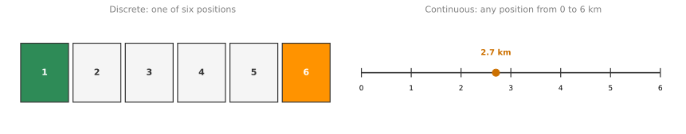
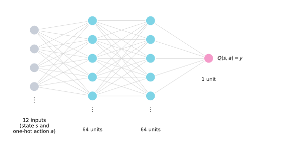
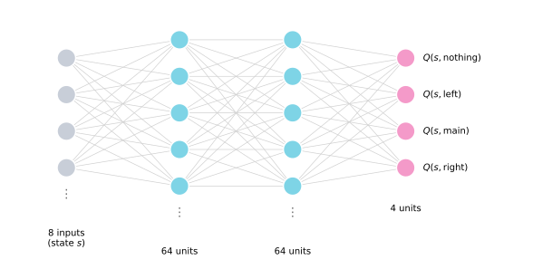
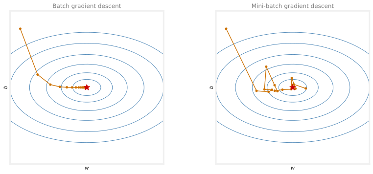

Continuous State Spaces
machine-learning
unsupervised-learning
Reinforcement learning in continuous state spaces, with the lunar lander, the DQN algorithm, epsilon-greedy exploration, mini-batches, and soft updates.
The previous page defined the state-action value function \(Q(s, a)\) and the Bellman equation, all on a Mars rover with just six states. Many robotic control applications, including the lunar lander that closes out the course, have continuous state spaces instead. This page explains what that means, introduces the lunar lander problem, and then builds a learning algorithm that uses a neural network to approximate the Q function, together with several refinements that make it work much better in practice.
Continuous State Space Applications
The simplified Mars rover example used a discrete set of states. The rover could only be in one of six possible positions. But most robots can be in more than six, or any discrete number of, positions. Instead, they can be in any of a very large number of continuously valued positions. If the Mars rover could be anywhere on a line, with its position indicated by a number ranging from \(0\) to \(6\) kilometers where any number in between is valid, that would be a continuous state space, because the position would be a number such as \(2.7\) kilometers along, or \(4.8\), or any other value between zero and six.
Truck Example

Consider the application of controlling a car or a truck. If you are building a self-driving car or truck and you want it to drive smoothly, then the state of the vehicle includes a few numbers, its \(x\) position, its \(y\) position, and its orientation, which way it is facing, denoted by the angle \(\theta\). Assuming the truck stays on the ground, there is no need to worry about how high up it is. The state also includes its speed in the \(x\) direction, its speed in the \(y\) direction, and how quickly the angle is changing. Is it turning at one degree per second, or at 30, or really quickly at 90 degrees per second?
For a truck or car, the state comprises a vector of six numbers, \[s = \begin{bmatrix} x \\ y \\ \theta \\ \dot{x} \\ \dot{y} \\ \dot{\theta} \end{bmatrix}\] where the dot notation means the rate of change, so \(\dot{x}\) is how quickly the \(x\) coordinate is changing, \(\dot{y}\) how quickly the \(y\) coordinate is changing, and \(\dot{\theta}\) how quickly the angle of the car is changing. Whereas the Mars rover state was just one of six possible numbers, any of these six numbers can take on any value within its valid range. For example, \(\theta\) ranges between \(0\) and \(360\) degrees.
Helicopter Example

What if you are building a reinforcement learning algorithm to control an autonomous helicopter? The position of the helicopter includes its \(x\) position, say how far north or south it is, its \(y\) position on the east-west axis, and \(z\), the height above ground. Beyond position, the helicopter also has an orientation, conventionally captured with three additional numbers. The roll, is it rolling to the left or the right? The pitch, is it pitching forward or pitching back? And finally the yaw, which is the compass orientation it is facing, north, east, south, or west.
So the state includes the position \(x, y, z\) and the roll, pitch, and yaw, denoted with the Greek letters \(\phi\), \(\theta\), and \(\omega\). But to control the helicopter, we also need to know its speed in each of the three directions, as well as its rate of turning, also called the angular velocity. How fast is the roll changing, how fast is the pitch changing, and how fast is the yaw changing? The state used to control autonomous helicopters is this list of 12 numbers, \[s = \begin{bmatrix} x \\ y \\ z \\ \phi \\ \theta \\ \omega \\ \dot{x} \\ \dot{y} \\ \dot{z} \\ \dot{\phi} \\ \dot{\theta} \\ \dot{\omega} \end{bmatrix}\] which is the input to a policy, and the job of the policy is to look at these 12 numbers and decide what action to take in the helicopter.
In any continuous state reinforcement learning problem, or continuous state Markov decision process (continuous state MDP), the state is not just one of a small number of possible discrete values, like a number from 1 to 6. Instead, it is a vector of numbers, any of which could take any of a large number of values.
Review Questions
1. What is the difference between a discrete and a continuous state space?
TipAnswer
In a discrete state space, the state is one of a small number of possible values, like the six positions of the simplified Mars rover. In a continuous state space, the state is a vector of numbers, each of which can take any value in its valid range, such as a position of \(2.7\) km anywhere along a line from \(0\) to \(6\) km.
1. Name the six numbers in the state of the self-driving truck.
TipAnswer
The position coordinates \(x\) and \(y\), the orientation angle \(\theta\), the speed in the \(x\) direction \(\dot{x}\), the speed in the \(y\) direction \(\dot{y}\), and the rate of turning \(\dot{\theta}\).
1. Why does the helicopter state need 12 numbers rather than 6?
TipAnswer
The helicopter moves in three dimensions, so it needs three position numbers (\(x\), \(y\), \(z\)) and three orientation numbers (roll \(\phi\), pitch \(\theta\), yaw \(\omega\)). Controlling it also requires the rates of change of all six, the three velocities and the three angular velocities, giving 12 numbers in total.
Lunar Lander
The lunar lander lets you land a simulated vehicle on the moon. It is like a fun little video game that has been used by a lot of reinforcement learning researchers. In this application, you are in command of a lunar lander that is rapidly approaching the surface of the moon, and your job is to fire thrusters at the appropriate times to land it safely on the landing pad between two flags. If the policy does well, the lander fires its thrusters downward and to the left and right and settles gently between the flags. If it does not do well, the lander crashes on the surface of the moon.
Actions
On every time step there are four possible actions.
- nothing, in which case the forces of inertia and gravity pull the lander toward the surface of the moon,
- left, firing the left thruster, which tends to push the lander to the right,
- main, firing the main engine, which thrusts downward, and
- right, firing the right thruster, which pushes the lander to the left.
State
The state space of this MDP has the position \(x\) and \(y\), how far to the left or right and how high up the lander is, the velocities \(\dot{x}\) and \(\dot{y}\), the angle \(\theta\), how far the lander is tilted to the left or right, and the angular velocity \(\dot{\theta}\). Finally, because a small difference in positioning makes a big difference in whether or not it has landed, the state includes two more values \(l\) and \(r\), corresponding to whether the left leg and the right leg are sitting on the ground. Whereas \(x\), \(y\), \(\dot{x}\), \(\dot{y}\), \(\theta\), and \(\dot{\theta}\) are numbers, \(l\) and \(r\) are binary valued and can only be \(0\) or \(1\). \[s = \begin{bmatrix} x \\ y \\ \dot{x} \\ \dot{y} \\ \theta \\ \dot{\theta} \\ l \\ r \end{bmatrix}\]
Reward Function
The reward function for the lunar lander gives
- a reward between \(+100\) and \(+140\) for getting to the landing pad, depending on how well it has flown and gotten to the center of the pad,
- an additional reward for moving toward the pad, and a negative reward for drifting away from it,
- \(-100\) for crashing,
- \(+100\) for a soft landing, a landing that is not a crash,
- \(+10\) for each leg, the left leg or the right leg, that gets grounded,
- \(-0.3\) every time it fires the main engine, and
- \(-0.03\) every time it fires the left or right thruster, to encourage it not to waste too much fuel.
Notice that this is a moderately complex reward function. The designers of the lunar lander application put some thought into exactly what behavior they wanted and codified it in the reward function, to incentivize more of the behaviors they want, and fewer of the behaviors, like crashing, that they do not want. You will find when building your own reinforcement learning application that it usually takes some thought to specify exactly what you want or do not want, and to codify that in the reward function. But specifying the reward function still turns out to be much easier than specifying the exact right action to take from every single state, which is much harder for this and many other reinforcement learning applications.
Goal
The lunar lander problem is as follows. The goal is to learn a policy \(\pi\) that, given a state \[s = \begin{bmatrix} x & y & \dot{x} & \dot{y} & \theta & \dot{\theta} & l & r \end{bmatrix}^T\] picks an action \(a = \pi(s)\) so as to maximize the return, the sum of discounted rewards. The lunar lander usually uses a fairly large value of \(\gamma\), in fact \(\gamma = 0.985\), pretty close to one. Learning such a policy means successfully landing the lunar lander. We are now ready to develop a learning algorithm, which will use deep learning, that is neural networks, to come up with a policy to land it.
Review Questions
1. What are the four actions available to the lunar lander on every time step?
TipAnswer
Do nothing (inertia and gravity pull the lander down), fire the left thruster (pushing the lander to the right), fire the main engine (thrusting downward), and fire the right thruster (pushing the lander to the left).
1. Which two components of the lunar lander state are binary, and why are they included?
TipAnswer
The values \(l\) and \(r\), which indicate whether the left leg and the right leg are touching the ground. They are included because a small difference in positioning makes a big difference in whether or not the lander has actually landed, so leg contact is worth representing explicitly.
1. Why is it acceptable for the reward function to be moderately complex, rather than a problem with the approach?
TipAnswer
The reward function is where the designers codify what behavior they want, rewarding landing and leg contact, penalizing crashing and wasted fuel. Even a somewhat elaborate reward function is much easier to specify than the exact right action to take from every single state, which is the alternative it replaces.
1. Why is the lunar lander a continuous state Markov decision process (MDP)?
The state has multiple numbers rather than only a single number (such as position in the \(x\)-direction)
The reward contains numbers that are continuous valued
The state contains numbers such as position and velocity that are continuous valued
The state-action value function \(Q(s, a)\) outputs continuous valued numbers
TipAnswer
c. A continuous state space means the state components, like position and velocity, can take any value within their valid ranges rather than one of a small discrete set. Having multiple numbers is not enough by itself (a vector of discrete values would still be discrete), and the continuity of the rewards or of the Q function’s output says nothing about the state space.
Learning the State-Value Function
Let us see how reinforcement learning can control the lunar lander. The key idea is that we are going to train a neural network to compute or approximate the state-action value function \(Q(s, a)\), and that in turn will let us pick good actions.
Neural Network to Approximate Q
The heart of the learning algorithm is a neural network that inputs the current state and the current action, and computes or approximates \(Q(s, a)\). For the lunar lander, take the state \(s\) and any action \(a\) and put them together. The state is the list of eight numbers seen above, \(x\), \(y\), \(\dot{x}\), \(\dot{y}\), \(\theta\), \(\dot{\theta}\), \(l\), \(r\). There are four possible actions, nothing, left, main, and right, and any of them can be encoded as a one-hot feature vector, so the first action becomes \([1, 0, 0, 0]\), the second \([0, 1, 0, 0]\), and so on. This list of 12 numbers, eight for the state and four for the one-hot encoding of the action, is the input to the neural network, and we call it \(x\).
These 12 numbers feed into a neural network with 64 units in the first hidden layer, 64 units in the second hidden layer, and a single unit in the output layer. The job of the neural network is to output \(Q(s, a)\), the state-action value function for the lunar lander, given the input \(s\) and \(a\). Because neural network training algorithms come into play in a little bit, this value \(Q(s, a)\) is also referred to as the target value \(y\) that the network is trained to approximate.

Reinforcement learning is different from supervised learning. We are not going to input a state and have the network output an action. Instead, the network inputs a state-action pair and tries to output \(Q(s, a)\), and using a neural network inside the reinforcement learning algorithm this way turns out to work pretty well.
If you can train a network with appropriate parameters to give good estimates of \(Q(s, a)\), then whenever the lunar lander is in some state \(s\), you can use the network to compute \(Q(s, a)\) for all four actions, that is \(Q(s, \text{nothing})\), \(Q(s, \text{left})\), \(Q(s, \text{main})\), and \(Q(s, \text{right})\). Whichever of these has the highest value determines the action \(a\) to pick. For example, if \(Q(s, \text{main})\) is the largest, fire the main engine.
Creating a Training Set with the Bellman Equation
So the question becomes how to train a neural network to output \(Q(s, a)\). The approach is to use the Bellman equation to create a training set with lots of examples \(x\) and \(y\), and then use supervised learning, exactly as covered when training neural networks, to learn a mapping from \(x\) to \(y\), that is, from the state-action pair to the target value \(Q(s, a)\).
Here is the Bellman equation, \[Q(\underbrace{s, a}_{\;x\;}) = \underbrace{R(s) + \gamma \max_{a'} Q(s', a')}_{\;y\;}\] The right-hand side is what \(Q(s, a)\) should equal, so call it \(y\), and the input to the neural network, the state and action, is \(x\). In supervised learning terms, the network learns a function \(f_{W,B}(x)\), with parameters \(W\) and \(B\) for the various layers, whose job is to input \(x\) and output something close to the target \(y\).
How do you get a training set with values \(x\) and \(y\)? Use the lunar lander and just try taking different actions in it. Since there is no good policy yet, take actions randomly, fire the left thruster, fire the right thruster, fire the main engine, do nothing. By trying out different things in the simulator, you observe many examples of being in some state \(s\), taking some action \(a\), maybe a good one, maybe a terrible one, receiving the reward \(R(s)\), and getting to a new state \(s'\). Each such experience is recorded as a tuple \[(s, a, R(s), s')\] For example, the first time you might be in state \(s^{(1)}\), take action \(a^{(1)}\), receive reward \(R(s^{(1)})\), and land in state \(s'^{(1)}\). A different time you might be in state \(s^{(2)}\), take action \(a^{(2)}\), and so on, perhaps 10,000 times or more.
Each tuple is enough to create a single training example \((x^{(1)}, y^{(1)})\). The first two elements give \(x^{(1)}\), just \(s^{(1)}\) and \(a^{(1)}\) put together, eight numbers for the state and four for the one-hot action. The last two elements give \(y^{(1)}\) through the right-hand side of the Bellman equation, \[y^{(1)} = R(s^{(1)}) + \gamma \max_{a'} Q(s'^{(1)}, a')\] Both quantities on the right are known, the saved reward and the saved next state. Computing this gives some number, like \(12.5\) or \(17\) or \(0.5\), and that is \(y^{(1)}\). The second tuple gives \(x^{(2)} = (s^{(2)}, a^{(2)})\) and \(y^{(2)} = R(s^{(2)}) + \gamma \max_{a'} Q(s'^{(2)}, a')\), and so on, until maybe 10,000 training examples fill the dataset.
You may be wondering where \(Q(s', a')\) comes from, since the Q function is the very thing being learned. It turns out you can start with a totally random guess for the Q function. At every step, \(Q\) is just some guess that gets better over time. The algorithm works nonetheless, as the next part shows.
Full Learning Algorithm
NoteDQN algorithm
- Initialize the neural network randomly as a first guess of \(Q(s, a)\). This is a little bit like initializing parameters randomly before running gradient descent in linear regression. What matters is whether the algorithm can slowly improve the parameters to get a better estimate.
- Repeat the following.
- Take actions in the lunar lander, obtaining tuples \((s, a, R(s), s')\).
- Store the 10,000 most recent tuples. This is called the replay buffer.
- Train the model occasionally.
- Use the 10,000 most recent tuples to create a training set of examples with \(x = (s, a)\) and \(y = R(s) + \gamma \max_{a'} Q(s', a')\), where \(Q\) is the current guess.
- Train a new network \(Q_{\text{new}}\), with the mean squared error loss, such that \(Q_{\text{new}}(s, a) \approx y\).
- Set \(Q = Q_{\text{new}}\).
As the algorithm runs, the lander takes many, many steps, maybe hundreds of thousands, but to avoid using excessive computer memory, common practice is to remember only the 10,000 most recent tuples in the replay buffer. Initially the lander just flies around randomly, sometimes crashing, sometimes not, gathering these tuples as experience for the learning algorithm.
Many of the ideas in this algorithm are due to Mnih et al. If you run it, starting with a really random guess of the Q function and repeatedly using the Bellman equation to improve the estimates, then by doing this over and over, each trained model becomes a slightly better estimate of the Q function. When \(Q\) is updated to \(Q_{\text{new}}\), the next training round computes \(\max_{a'} Q(s', a')\) with a better estimate, so the model after that is better still. Run long enough, this becomes a pretty good estimate of the true \(Q(s, a)\), which can then be used to pick good actions in the MDP.
The algorithm is sometimes called the DQN algorithm, which stands for Deep Q-Network, because it uses deep learning and a neural network to learn the Q function. Used exactly as described, it will kind of work on the lunar lander. Maybe it will take a long time to converge, maybe it will not land perfectly, but it will sort of work. With a couple of refinements, it can work much better.
Review Questions
1. What does the neural network in the DQN algorithm take as input, and what does it output?
TipAnswer
The input is a list of 12 numbers, the eight numbers of the lunar lander state \(s\) together with a one-hot encoding (four numbers) of the action \(a\). The output is a single number, the estimate of \(Q(s, a)\), produced after two hidden layers of 64 units each.
1. How is one experience tuple \((s, a, R(s), s')\) turned into a training example \((x, y)\)?
TipAnswer
The first two elements form the input, \(x = (s, a)\), the state plus the one-hot encoded action. The last two elements form the target via the Bellman equation, \(y = R(s) + \gamma \max_{a'} Q(s', a')\), using the saved reward, the saved next state, and the current guess of the Q function.
1. The target \(y\) depends on the Q function itself, which is not known at the start. Why does the algorithm still work?
TipAnswer
The algorithm starts with a totally random guess for \(Q\) and treats it as the current estimate when computing targets. Each round of training produces a slightly better estimate, so the targets used in the next round are slightly better too, and repeating this over and over converges toward a good estimate of the true Q function.
1. What is the replay buffer?
TipAnswer
It is the store of the 10,000 most recent experience tuples \((s, a, R(s), s')\) observed while taking actions in the MDP. Keeping only the most recent tuples avoids using excessive computer memory while still providing a training set for the next round of learning.
1. What does DQN stand for, and why is the name apt?
Deep Q-Network, because a deep neural network is trained to learn the Q function.
Discrete Quantity Network, because the actions are discrete.
Deep Quality Network, because it measures the quality of the landing.
Double Q-Network, because two networks are trained at once.
TipAnswer
a. DQN stands for Deep Q-Network. The algorithm uses deep learning, a neural network, to train a model that learns the state-action value function \(Q(s, a)\).
1. In the learning algorithm, we repeatedly create an artificial training set to which we apply supervised learning, where the input is \(x = (s, a)\) and the target, constructed using Bellman’s equation, is \(y =\) _____?
\(y = R(s)\)
\(y = \max\limits_{a'} Q(s', a')\) where \(s'\) is the state you get to after taking action \(a\) in state \(s\)
\(y = R(s) + \gamma \max\limits_{a'} Q(s', a')\) where \(s'\) is the state you get to after taking action \(a\) in state \(s\)
\(y = R(s')\) where \(s'\) is the state you get to after taking action \(a\) in state \(s\)
TipAnswer
c. The target is the whole right-hand side of the Bellman equation, the immediate reward \(R(s)\) plus \(\gamma\) times the best Q value available from the next state \(s'\). Options a and b each keep only one of the two pieces, and option d uses the wrong state’s reward and drops the future term entirely.
Algorithm Refinement: Improved Neural Network Architecture
The architecture above inputs 12 numbers and outputs \(Q(s, a)\) as a single number. Whenever the lander is in some state \(s\), it has to carry out inference in the neural network separately four times, once per action, to compute \(Q(s, \text{nothing})\), \(Q(s, \text{left})\), \(Q(s, \text{main})\), and \(Q(s, \text{right})\) and pick the largest. This is inefficient, four inference passes from every single state.
It turns out to be more efficient to train a single neural network to output all four values simultaneously. In the modified architecture, the input is just the eight numbers of the state. It goes through 64 units in the first hidden layer and 64 in the second, and the output layer now has four output units whose job is to output \(Q(s, \text{nothing})\), \(Q(s, \text{left})\), \(Q(s, \text{main})\), and \(Q(s, \text{right})\) at the same time.

Given a state \(s\), one inference pass produces all four Q values at once, and picking the action \(a\) that maximizes \(Q(s, a)\) is then very quick. The Bellman equation also benefits. The term \(\max_{a'} Q(s', a')\) requires the Q value of every action in the next state, and this network produces \(Q(s', a')\) for all four actions \(a'\) at the same time, so the max is just the largest of the four outputs. Most implementations of DQN use this more efficient architecture.
Review Questions
1. Why is the four-output architecture more efficient than the single-output architecture?
TipAnswer
The single-output network must run inference once per action, so four times per state, to compare the Q values of the actions. The four-output network takes only the state as input and computes the Q values of all four actions in a single inference pass, which also makes evaluating \(\max_{a'} Q(s', a')\) in the Bellman equation cheap, since the max is taken over the four outputs directly.
1. What changes about the network input when moving to the improved architecture?
TipAnswer
The input shrinks from 12 numbers (state plus one-hot action) to just the 8 numbers of the state. The action is no longer an input at all, because each output unit corresponds to one specific action.
Algorithm Refinement: ϵ-Greedy Policy
Even while the algorithm is still learning how to approximate \(Q(s, a)\), it needs to take some actions in the lunar lander. How should those actions be picked while learning is still underway? The most common way is to use an ϵ-greedy policy.
When in some state \(s\), we might not want to take actions totally at random, because that will often be a bad action. So here are two options.
- Option 1. In state \(s\), always pick the action \(a\) that maximizes the current guess \(Q(s, a)\). Even if \(Q(s, a)\) is not a great estimate yet, do the best possible with it. This may work okay, but it is not the best option.
- Option 2. Most of the time, say with probability \(0.95\), pick the action that maximizes \(Q(s, a)\). A small fraction of the time, say \(5\) percent, pick an action \(a\) at random. This is what is commonly done.
Why occasionally pick an action randomly? Suppose for some strange reason \(Q(s, a)\) was initialized randomly so that the learning algorithm thinks firing the main thruster is never a good idea, meaning \(Q(s, \text{main})\) starts out always very low. Under option 1, the agent always picks the action maximizing \(Q(s, a)\), so it will never, ever try firing the main thruster, and therefore never learn that firing the main thruster is actually sometimes a good idea. Under option 2, on every step there is some small probability of trying out different actions, so the network can learn to overcome its own possible preconceptions about what might be a bad idea that turns out not to be the case.
Picking actions randomly is sometimes called an exploration step, trying something out to learn more about actions in circumstances with little prior experience. Taking the action that maximizes \(Q(s, a)\) is called a greedy action, or in the reinforcement learning literature, an exploitation step, exploiting everything learned so far to do the best possible. The literature talks about the exploration versus exploitation trade-off, how often to take actions randomly to learn more, versus maximizing the return with the current best guess.
Option 2 is called an ϵ-greedy policy, where \(\epsilon = 0.05\) is the probability of picking an action randomly. A lot of people have commented that the name is confusing, since the policy is actually greedy \(95\) percent of the time, not \(5\) percent, so “\((1 - \epsilon)\)-greedy policy” might be a more accurate description. But for historical reasons, the name ϵ-greedy policy has stuck, and it refers to the policy that explores an \(\epsilon\) fraction of the time.
One other trick is to start off \(\epsilon\) high, taking random actions a lot of the time initially, and then gradually decrease it, so that over time the algorithm relies more on its improving estimate of the Q function and less on random actions. In the lunar lander, \(\epsilon\) might start at \(1.0\), picking actions completely at random, and gradually decrease all the way down to \(0.01\), so that eventually the agent is greedy \(99\) percent of the time and random only \(1\) percent of the time.
NoteHyperparameters in reinforcement learning are finicky
Compared to supervised learning, reinforcement learning algorithms are more finicky in their choice of hyperparameters. In supervised learning, a learning rate set a little too small means training takes maybe three times as long, which is annoying but not that bad. In reinforcement learning, setting \(\epsilon\) or other parameters not quite well may multiply the training time by 10 or by 100. Reinforcement learning algorithms, partly because they are less mature than supervised learning algorithms, are much more sensitive to such choices, and tuning them can frankly be more frustrating.
Review Questions
1. With \(\epsilon = 0.05\), what does an ϵ-greedy policy do at each step?
TipAnswer
With probability \(0.95\) it picks the greedy action, the one that maximizes the current estimate \(Q(s, a)\), and with probability \(0.05\) it picks an action at random.
1. What can go wrong if the agent only ever takes the action maximizing its current \(Q(s, a)\)?
TipAnswer
A random initialization can give some action, like firing the main thruster, a very low Q value by chance. The purely greedy agent then never tries that action, so it never gathers the experience that would reveal the action is actually sometimes good. The occasional random action lets the network overcome such preconceptions.
1. What do exploration and exploitation mean in reinforcement learning?
TipAnswer
Exploration means picking an action randomly to learn more about actions in situations with little prior experience, even if it may not be the best action. Exploitation means taking the greedy action that maximizes \(Q(s, a)\), using everything learned so far to maximize the return. The tension between the two is called the exploration versus exploitation trade-off.
1. Why is \(\epsilon\) often started high and gradually decreased during training?
TipAnswer
Early on, the Q estimate is close to random, so random actions (\(\epsilon\) near \(1.0\)) gather diverse experience. As the estimate improves, it becomes more trustworthy, so \(\epsilon\) is lowered, down to around \(0.01\), letting the agent act greedily almost all the time while still exploring a little.
Algorithm Refinement: Mini-Batches and Soft Updates (Optional)
Two further refinements make the algorithm run faster and converge more reliably. The first, mini-batches, applies to supervised learning just as well as reinforcement learning. The second is called soft updates.
Mini-Batches
To understand mini-batches, look at supervised learning first, with the dataset of housing sizes and prices from linear regression and its cost function \[J(w, b) = \frac{1}{2m} \sum_{i=1}^{m} \left( f_{w,b}(x^{(i)}) - y^{(i)} \right)^2\] with gradient descent repeatedly updating \(w\) and \(b\) using the partial derivatives of \(J\). Back then, the training set size \(m\) was pretty small, 47 examples. But what if \(m\) is very large, say \(m = 100{,}000{,}000\)? A national census in a country with a hundred million housing units can produce a dataset of that magnitude. Every single step of gradient descent then requires computing an average over 100 million examples, only to take one tiny step, then scanning the entire dataset again for the next tiny step. That is very slow.
The idea of mini-batch gradient descent is to not use all 100 million examples on every iteration. Instead pick a smaller number, \(m' = 1{,}000\), and on every step use only some subset of \(m'\) examples, so the sum inside the cost runs over \(m'\) examples instead of \(m\). Each iteration then looks at only \(1{,}000\) examples rather than 100 million, so every step takes much less time. The first iteration looks at one subset of the data, the next iteration at a different subset, and so on, either scanning through the subsets in order or picking a fresh subset every time. Each subset is not the whole dataset, but it is slightly representative of it, so a gradient descent step computed on it is still reasonable.

On contours of the cost function \(J\), batch gradient descent starts somewhere and reliably marches toward the global minimum with every step. Mini-batch gradient descent is noisier. Each iteration heads in roughly the right direction, but not the best direction, and sometimes an unlucky subset of examples even sends a step the wrong way. On average, though, it tends toward the global minimum, not reliably, somewhat noisily, but with every iteration being much more computationally inexpensive. With a very large training set, mini-batch learning turns out to be much faster, which is why, for supervised learning with big datasets, mini-batch gradient descent, or a mini-batch version of other optimization algorithms like Adam, is used more commonly than batch gradient descent.
Going back to the reinforcement learning algorithm, even though the replay buffer stores the 10,000 most recent tuples, the mini-batch version does not use all 10,000 every time a model is trained. Instead it takes a subset, say \(1{,}000\) tuples \((s, a, R(s), s')\), and uses them to create just \(1{,}000\) training examples for the neural network. Each training iteration becomes a little more noisy but much faster, and this overall tends to speed up the reinforcement learning algorithm.
Soft Updates
The final step of the algorithm says to set \(Q = Q_{\text{new}}\), and it turns out this can make a very abrupt change to \(Q\). If the newly trained network happens, just by chance, to be not very good, maybe even a little worse than the old one, then the Q function just got overwritten with a potentially worse, noisy neural network. The soft update method helps prevent one unlucky training round from making \(Q\) worse.
The network \(Q\) has parameters \(W\) and \(B\), and training produces new parameters \(W_{\text{new}}\) and \(B_{\text{new}}\). The original algorithm sets \(W = W_{\text{new}}\) and \(B = B_{\text{new}}\), which is what \(Q = Q_{\text{new}}\) means. With a soft update, instead set \[W = 0.01\, W_{\text{new}} + 0.99\, W \qquad \qquad B = 0.01\, B_{\text{new}} + 0.99\, B\] so the parameters become \(99\) percent their old values plus \(1\) percent the new values, accepting only a little bit of the new network on each update. The numbers \(0.01\) and \(0.99\) are hyperparameters controlling how aggressively \(W\) moves toward \(W_{\text{new}}\), and the two are expected to add up to one. At one extreme, \(W = 1 \times W_{\text{new}} + 0 \times W\) recovers the original algorithm, just copying \(W_{\text{new}}\) onto \(W\). The soft update allows a more gradual change to the parameters that define the current guess of the Q function, and it turns out to make the reinforcement learning algorithm converge more reliably, making it less likely to oscillate, diverge, or show other undesirable properties.
With these two final refinements, mini-batches and soft updates, the algorithm can land the lunar lander really well. The lunar lander is a decently complex, decently challenging application, and seeing it land safely because of code you wrote is really cool.
Review Questions
1. Why is batch gradient descent slow when the training set has 100 million examples, and how do mini-batches help?
TipAnswer
Every single gradient descent step must compute an average over all 100 million examples, only to move the parameters a tiny amount before scanning the whole dataset again. With mini-batches, each step uses only a subset of \(m' = 1{,}000\) examples, so each iteration is far cheaper. The steps become noisier and less reliable individually, but on average they still head toward the minimum, and the overall algorithm is much faster.
1. How does the mini-batch idea apply to the DQN algorithm?
TipAnswer
Although the replay buffer stores the 10,000 most recent tuples, each training round uses only a subset, say 1,000 of them, to create the training examples. Each round becomes slightly noisier but much faster, speeding up the reinforcement learning algorithm overall.
1. Write the soft update rule for \(W\) and explain what problem it solves.
TipAnswer
\[W = 0.01\, W_{\text{new}} + 0.99\, W\] and similarly for \(B\). Setting \(Q = Q_{\text{new}}\) outright makes an abrupt change, so a single unlucky training round that produces a worse network would overwrite the Q function entirely. The soft update accepts only a small fraction of the new parameters each time, changing \(Q\) gradually, which makes the algorithm converge more reliably and less likely to oscillate or diverge.
1. In the soft update \(W = \tau\, W_{\text{new}} + (1 - \tau)\, W\), what does choosing \(\tau = 1\) correspond to?
TipAnswer
It copies \(W_{\text{new}}\) onto \(W\) entirely, which is exactly the original algorithm with its abrupt update \(Q = Q_{\text{new}}\). Smaller values like \(0.01\) make the update more gradual.
State of Reinforcement Learning
Reinforcement learning is an exciting set of technologies, but despite all the research momentum and excitement behind it, there is a bit, or maybe sometimes a lot, of hype around it. It is worth having a practical sense of where reinforcement learning is today in terms of its utility for applications.
One reason for some of the hype is that many research publications have been on simulated environments, and it is much easier to get a reinforcement learning algorithm to work in a simulation or a video game than on a real robot. Many developers have commented that even after getting an algorithm to work in simulation, it turned out to be surprisingly challenging to get it to work in the real world. If you apply these algorithms to a real application, this is one limitation to pay attention to.
Second, despite all the media coverage, today there are far fewer applications of reinforcement learning than of supervised and unsupervised learning. If you are building a practical application, the odds that supervised or unsupervised learning is the right tool for the job are much higher than the odds of ending up using reinforcement learning. In day-to-day applied work, supervised and unsupervised learning dominate, with reinforcement learning appearing mostly in specialized settings such as robotic control.
That said, there is a lot of exciting research in reinforcement learning right now, the potential for future applications is very large, and it remains one of the major pillars of machine learning. Having it as a framework, alongside supervised and unsupervised learning, should make you more effective at building working machine learning systems. This also completes the reinforcement learning portion of the course, from states, actions, and rewards on a six-state rover all the way to a deep Q-network landing a simulated lunar lander.
Review Questions
1. Why should results from simulated environments be interpreted with caution?
TipAnswer
It is much easier to get a reinforcement learning algorithm to work in a simulation or video game than on a real robot. Many developers have found that an algorithm working in simulation was still surprisingly challenging to get working in the real world, so simulated results do not guarantee real-world success.
1. How does the number of practical applications of reinforcement learning today compare to supervised and unsupervised learning?
TipAnswer
There are far fewer practical applications of reinforcement learning. For a typical practical application, supervised or unsupervised learning is much more likely to be the right tool, with reinforcement learning used mostly in specialized areas such as robotic control, even though its research potential remains large.
1. You have reached the final practice quiz of this course! What does that mean? (Please check all the answers, because all of them are correct!)
What an accomplishment, you made it!
You deserve to celebrate!
The course instructor sends heartfelt congratulations to you!
The DeepLearning.AI and Stanford Online teams would like to give you a round of applause!
TipAnswer
All of them. Congratulations on making it through the entire reinforcement learning material, from states, actions, and rewards all the way to a deep Q-network landing the lunar lander.